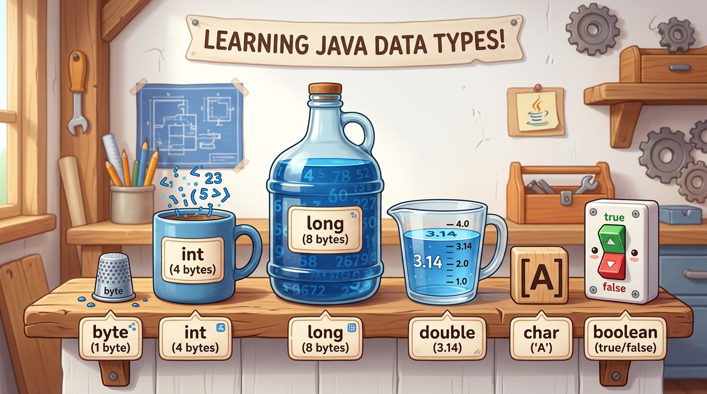

Bridge 2 — Variables, Types & Operators
Programs are engines that process information. To calculate a tax rate, keep a player's high score, or remember a customer's name, your code must store data in RAM. In this lesson you master Java's 8 primitive data types, understand exactly how bits are allocated, navigate arithmetic operators, avoid the notorious integer division trap, and wield type casting with confidence.
- Explain what a variable is in computer memory and adhere to Java's
camelCasenaming rules. - Categorize and contrast all 8 primitive data types by memory size (bits) and valid value range.
- Perform calculations using arithmetic operators (
+,-,*,/,%) and compound assignment (+=,-=). - Identify and prevent the integer division trap where fractional digits are silently lost.
- Apply implicit widening and explicit narrowing type casting safely without data corruption.
- Build a complete, real-world financial paycheck calculator console application.
Your Learning Roadmap
1. What is a Variable?
A variable is a named storage location in your computer's Random Access Memory (RAM). Think of it as a labeled box that holds a specific piece of information. In Java, every variable has three essential parts:
- Data Type: What kind of value fits in the box (e.g. whole number, decimal number, single character).
- Identifier (Name): The label on the box so you can refer to it later (e.g.
studentAge,accountBalance). - Value: The actual data placed inside the box (e.g.
21,450.75).
public class VariableBasics {
public static void main(String[] args) {
int age = 20; // Declaration + Initialization
double hourlyRate = 28.50; // Decimal number
boolean isEnrolled = true; // Truth value (true or false)
System.out.println("Age: " + age);
System.out.println("Hourly Rate: $" + hourlyRate);
System.out.println("Enrolled: " + isEnrolled);
}
}2. The Memory Jars Analogy
Why does Java make you specify int, double, or byte?
Because the computer must allocate an exact amount of silicon memory switches (bits) for each value.

byte is a tiny spice jar (holds 8 bits); an int is a standard milk bottle (32 bits);
and a long is an industrial water jug (64 bits). You can pour a spice jar into a water jug effortlessly
(widening), but pouring a water jug into a spice jar causes messy overflow unless you carefully measure it (narrowing)!
3. The 8 Primitive Data Types
Java has exactly 8 primitive types built directly into the language syntax.
All other types in Java (like String, Scanner, or custom classes) are Reference Types.
| Type | Size | Kind of Value | Range / Valid Values | Code Example |
|---|---|---|---|---|
byte |
8 bits (1 byte) | Small integer | -128 to 127 | byte level = 5; |
short |
16 bits (2 bytes) | Medium integer | -32,768 to 32,767 | short year = 2026; |
int |
32 bits (4 bytes) | Default integer | ~ -2.14 Billion to +2.14 Billion | int score = 95000; |
long |
64 bits (8 bytes) | Giant integer | ~ -9 Quintillion to +9 Quintillion | long worldPop = 8000000000L; |
float |
32 bits (4 bytes) | Single-precision decimal | ~6-7 decimal digits accuracy | float price = 19.99f; |
double |
64 bits (8 bytes) | Default decimal | ~15-16 decimal digits accuracy | double gpa = 3.85; |
char |
16 bits (2 bytes) | Single Unicode character | Single quotes: 'A', '9', '★' |
char grade = 'A'; |
boolean |
1 bit logical | True or False | Only true or false |
boolean active = true; |
- Use
intfor whole numbers (counts, indexes, loop counters). - Use
doublefor decimals (prices, measurements, percentages). - Use
booleanfor flags, toggles, and state checks. - Use
String(a reference type) for words, sentences, and user names.
4. Arithmetic Operators & Precedence
Java supports standard mathematical operators to compute values:
| Operator | Name | Example | Result |
|---|---|---|---|
+ | Addition | 10 + 4 | 14 |
- | Subtraction | 10 - 4 | 6 |
* | Multiplication | 10 * 4 | 40 |
/ | Division | 10 / 4 | 2 (integer division!) |
% | Modulo (Remainder) | 10 % 4 | 2 (since 10 = 4×2 + 2) |
Modulo (%) is a software engineer's secret weapon:
It tells you what is left over after a whole division.
For example: number % 2 == 0 instantly tells you if a number is even!
⚠️ 5. The Dangerous Integer Division Trap
In mathematics, 7 / 2 = 3.5. But in Java, if both sides of a division are integers (int),
Java performs integer division — it simply chops off (truncates) the decimal part completely!
int a = 7;
int b = 2;
double result1 = a / b; // result1 is 3.0, NOT 3.5! (TRAP!)
// THE FIX: Make at least one operand a double
double result2 = (double) a / b; // result2 is 3.5 (CORRECT)
double result3 = 7.0 / 2; // result3 is 3.5 (CORRECT)double result1 = a / b; become 3.0?
Java evaluates expressions from right to left across the assignment sign.
First, it evaluates a / b. Since both a and b are int,
the result is calculated as 3 (an integer).
Only *then* does Java store that 3 into the double variable, turning it into 3.0!
To keep the decimals, cast at least one variable before the slash: (double) a / b.
6. Type Casting: Widening vs Narrowing
Type casting is converting a value from one data type to another. There are two directions:
A. Widening (Automatic / Safe)
Converting a smaller type to a larger type (e.g. int to double).
Because the target container is bigger than the source container, zero information is lost.
Java performs this automatically:
int smallNum = 42;
double bigNum = smallNum; // Automatic widening: bigNum is now 42.0B. Narrowing (Explicit / Risky)
Converting a larger type to a smaller type (e.g. double to int).
Because the value might not fit or might lose precision, Java refuses to do this automatically.
You must explicitly tell the compiler: "I know what I am doing, convert it anyway" by writing the target type in parentheses:
double gpa = 3.98;
int roundedGpa = (int) gpa; // Explicit narrowing: truncates to 3!💻 Interactive Simulator: Memory & Type Explorer
Select any primitive type below to inspect its memory footprint in bits, range limits, and see how values behave:
Select a type above
Click any button to view size, bits, min/max range, and real-world Java use case.
⚠️ Top 3 Beginner Variable Traps
long nationalDebt = 34000000000; // ERROR: integer number too large
float price = 19.99; // ERROR: incompatible types: possible lossy conversion from double to floatThe Reason: In Java, all numeric literals with no suffix are treated as int (whole numbers) or double (decimals). 34 billion is too large to fit in an int literal.
The Fix: Append L for long and f for float:
long nationalDebt = 34000000000L; // Correct!
float price = 19.99f; // Correct!int score = 100;
int score = 200; // ERROR: variable score is already definedThe Fix: You only declare the type (int) once when creating the variable. When updating its value, just write its name:
int score = 100;
score = 200; // Correct update!📝 Knowledge Check
System.out.println(11 / 4);14 % 5 in Java?% returns the remainder after division. 14 divided by 5 is 2 with a remainder of 4 (5 × 2 = 10; 14 - 10 = 4).
double into an int?(int) 4.7, resulting in 4.
totalStudentCount follows standard lowerCamelCase. Variable names cannot start with numbers, cannot contain hyphens, and cannot use reserved keywords like class.
🛠 Guided Lab: Paycheck & Tax Calculator
PaycheckCalculator inside your project.
hoursWorked (e.g. 42.5), hourlyRate (e.g. 32.0), and taxRate (e.g. 0.18 for 18%).
grossPay = hoursWorked * hourlyRate.
taxWithheld = grossPay * taxRate and netPay = grossPay - taxWithheld.
==================================
EMPLOYEE PAYSLIP SUMMARY
==================================
Hours Worked : 42.5
Hourly Rate : $32.00
Gross Income : $1360.00
Tax Deducted : $244.80 (18%)
----------------------------------
TAKE-HOME NET: $1115.20
==================================📺 Recommended Further Study
A crystal-clear, beginner-friendly walkthrough of all 8 primitives with visual graphics.
▶ Watch on YouTubeDeep dive into widening vs narrowing type casting and memory boundaries.
▶ Watch on YouTubeif, else, switch, and loops so your code can make decisions.